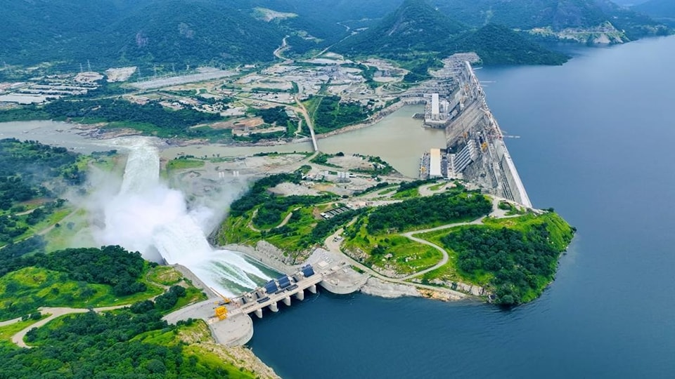
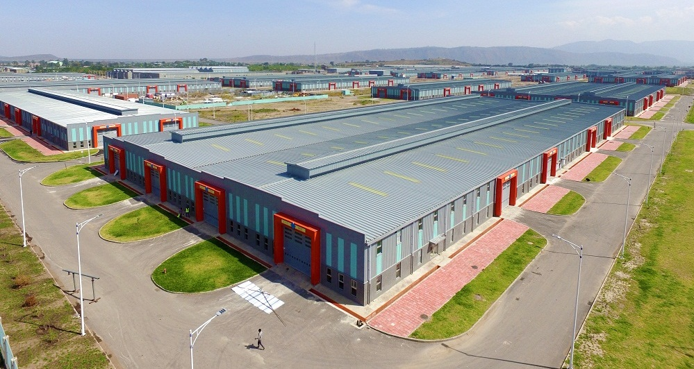

Révolution Infrastructurale
Des projets phares qui redéfinissent le paysage éthiopien

MÉGA-PROJET
Barrage de la Renaissance
6,450 MW
2022-2025
4.8Mds$
Plus grand barrage hydroélectrique d'Afrique, symbole de souveraineté énergétique. Capacité de production électrique doublée pour le pays.

TRANSPORT
Rail Addis-Djibouti
752 km
12h
Port maritime
Première ligne ferroviaire électrifiée d'Afrique de l'Est, reliant la capitale au port de Djibouti. Réduction du temps de transport de 3 jours à 12 heures.

INDUSTRIE
Zones Industrielles
12 zones
200,000 emplois
Exportations
Parcs industriels spécialisés dans le textile, agro-alimentaire et manufacturing. Attraction d'investissements étrangers et création d'emplois massifs.